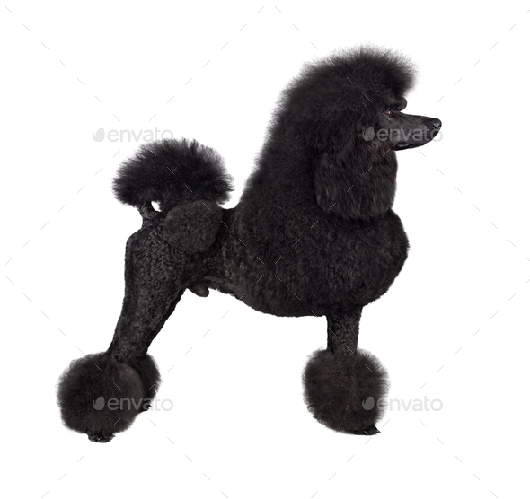

Poodle
| Weight | 20 -27 kg |
| Coat | Long, curly |
| Color | Any solid color including white, black, gray, blue, silver and brown |
Poodles are notorious for their intelligence and ease of training. They are lively, active, fun-loving dogs with a sense of the ridiculous. Poodles thrive on attention and can develop bad habits such as nuisance barking if ignored or left alone.The smaller poodles can be aggressive to people outside their families or to other dogs. They should have early socialization to other people and pets and a firm hand in training. Poodles can be protective of their families and homes.